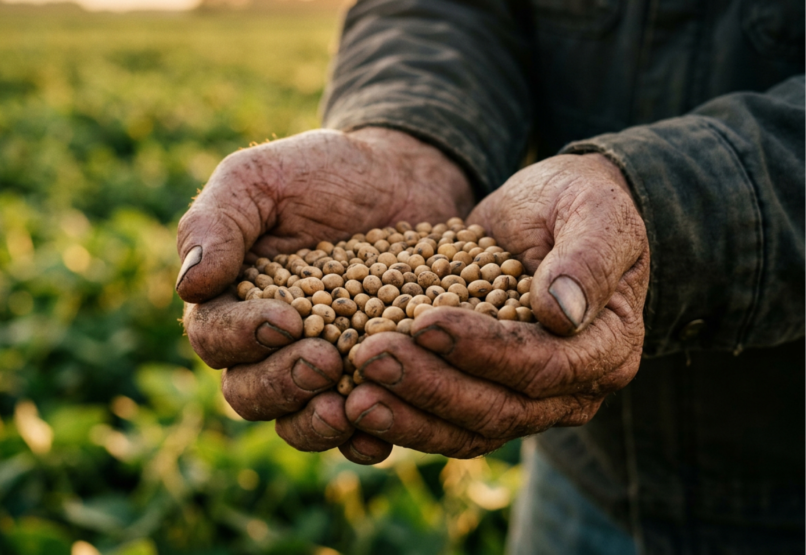
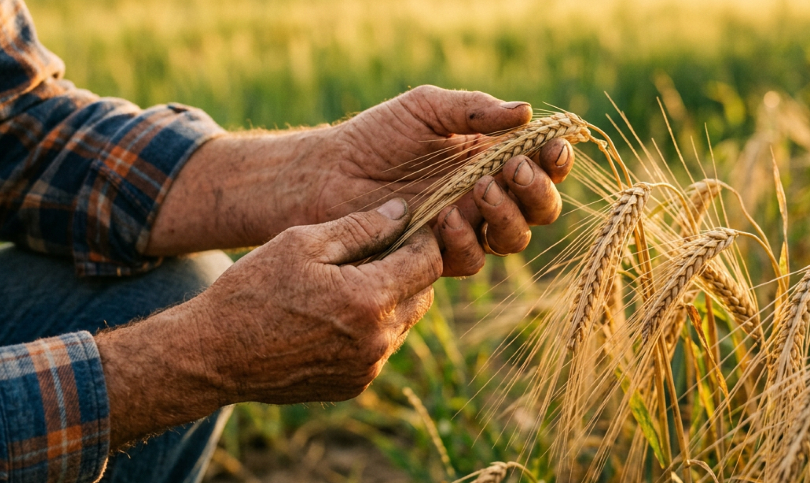
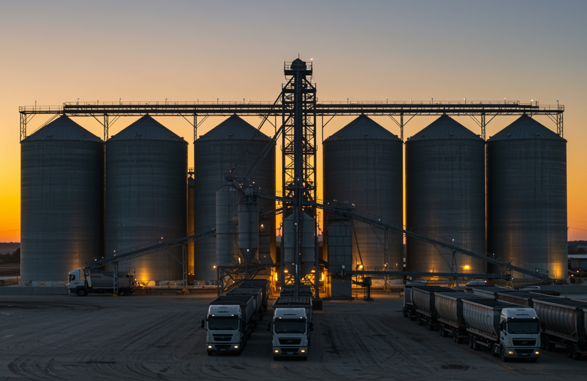
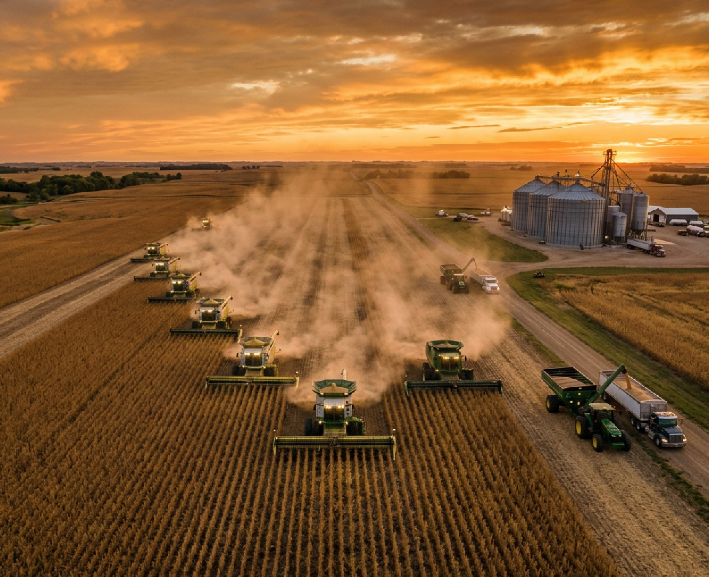

Origem confiável
Trabalhamos diretamente com produtores, garantindo qualidade e rastreabilidade desde a base.
COMO OPERAMOS
A Vital Agro atua como ponte estratégica entre o campo e a indústria. Compramos e comercializamos grãos com eficiência — garantindo segurança para o produtor e abastecimento confiável para grandes compradores.
Milho, soja, sorgo, milheto e trigo negociados com quem entende o mercado e respeita o tempo do campo.

Como Funciona
Trabalhamos diretamente com produtores, garantindo qualidade e rastreabilidade desde a base.

Analisamos preços, demanda e timing para maximizar cada negociação — para os dois lados.
Intermediamos com transparência total, reduzindo riscos e eliminando ruídos na operação.
Volume, padrão e previsibilidade para que a indústria nunca pare por falta de insumo.
Para Quem É
Produtor rural
A Vital Agro aproxima o produtor de uma negociação mais objetiva, com escoamento, leitura de mercado e relação direta.

Indústria e grandes compradores
Abastecimento contínuo, com qualidade e volume consistentes para sua operação não parar.
Diferencial
A Vital Agro nasceu de um princípio simples: fazer o mercado de commodities funcionar melhor para todos os lados. Falamos a língua do produtor. Entendemos a pressão da indústria. E operamos no meio não como atravessador, mas como facilitador — com clareza, compromisso e velocidade de decisão.

Contato
Se você produz, organizamos a venda. Se você precisa comprar, montamos a operação com origem, critério e entrega alinhada.